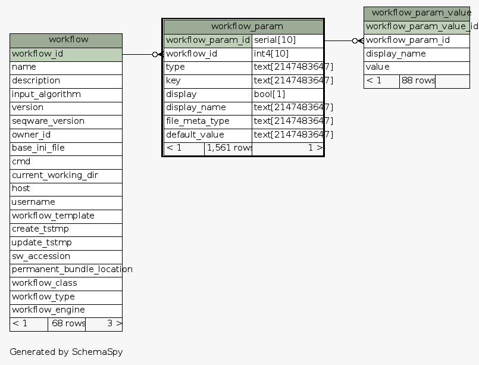
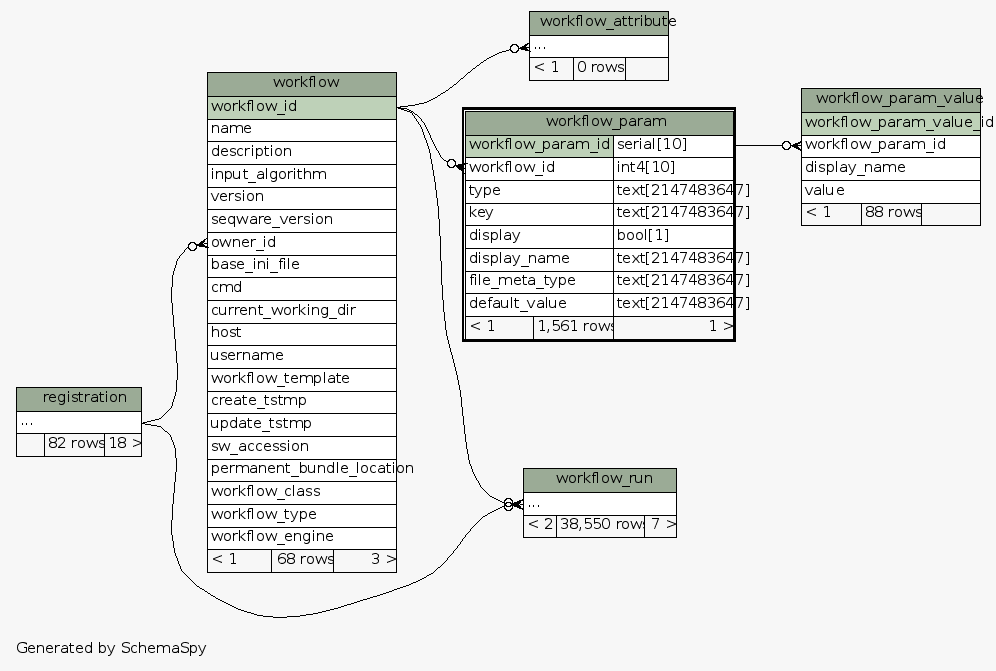

| Table test_seqware_meta_db.public.workflow_param Records parameters for workflows (populates default workflow.ini)
|
Generated by SchemaSpy |
| |||||||||||||||||||||||||||||||||||||||||||||||||||||||||||||||||||||||||||||||||||||
Table contained 1,561 rows at Mon Mar 31 11:39 EDT 2014 | |||||||||||||||||||||||||||||||||||||||||||||||||||||||||||||||||||||||||||||||||||||
Indexes:
| Column(s) | Type | Sort | Constraint Name |
|---|---|---|---|
| workflow_param_id | Primary key | Asc | pk_workflow_param |
|
  |